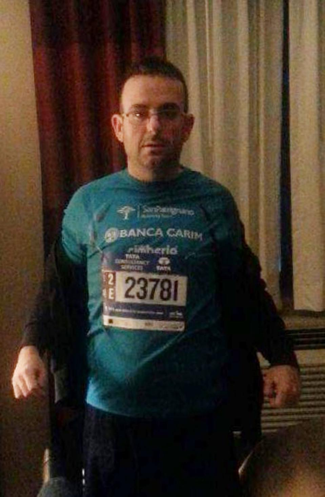

Missing runner, a recovering addict, found after NY marathon
A recovering heroin addict from Italy last seen after crossing the finish line at Sunday's New York City Marathon was found Tuesday aboard a subway train, police said.
Gianclaudio Marengo, 30, was still wearing his racing attire of a turquoise shirt and black shorts when an off-duty police officer on his way to work noticed him on a midtown Manhattan train at about 6:40 a.m. He was taken to a police station and then to a hospital to be treated for dehydration, authorities said.
He was missing for close to 40 hours, authorities said.
"We don't know what happened to him in New York," said Matteo Diotalevi, a spokesman for the San Patrignano drug rehabilitation center on the Adriatic coast. "But he's a fragile person."
Marengo was among a group of eight Italian recovering addicts who joined more than 50,000 other runners in the 45th running of the marathon, Diotalevi said.
He was separated from his group at the finish line since all the runners finished at different times, Diotalevi said. Police said they were told by the group that Marengo was mentally disabled but Diotalevi denied that he had any mental health issues.
"He is certainly a fragile, vulnerable and very emotional person who after years of drug dependency found the chance to recover in San Patrignano," the rehabilitation center said in a statement.
Marengo, who built furniture at the center's woodworking shop, discovered a passion for running in the 3 ½ years he has spent at the center, Diotalevi said. He's originally from the Italian town of Terni, north of Rome.